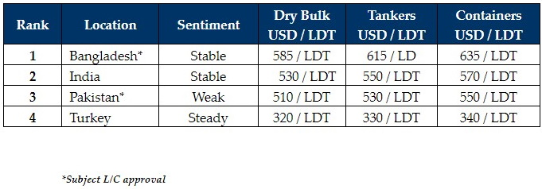

inWeekly Demolition Reports29/05/2023

Amidst the ongoing slowdown in the supply of tonnage and the onset of the traditionally quieter summer / monsoonmonths that would certainly help ease off the demand, prices across the sub-continent markets remained steady for another week.
There is also the impending budget on June 1st in Bangladesh and many End Buyers are waiting to see if any new changes / taxes are imposed on the domestic ship recycling sector before offering afresh on tonnage.
However, the general consensus on the upcoming budget is that no changes are expected and that it may actually be positive on the overall business outlook in Bangladesh, amidst a growing demand for steel and raw materials due to various upcoming construction and infrastructure projects that are due in the summer months.
Additionally, the recent meeting in Bangladesh on whether to ratify the Hong Kong convention produced some interesting discussions and outcomes, with the country amending its ship recycling standard from ‘Red’ to ‘Orange’, on the environmental outlook for the country. The next step is for flags to ratify the convention before it can be entered into force, in what could be a landmark ruling in Bangladesh – the first sub-continent country to be actively doing so.
Meanwhile, after a recent wobble in prices, India too has steadied and there is now an emerging demand as Buyers in Alang have missed out on a majority of the non-HKC (and reportedly, even some HKC) tonnage to the firmer Chattogram market.
Pakistan remains on the sidelines, with political and economic chaos rendering this market virtually redundant and there is no realistic hope of the situation stabilizing any time soon.
Finally, Turkey remains suspended in no-man’s land, as the situation remains unchanged from last week and the election results awaiting to be announced.
For week 21 of 2023, GMS demo rankings / pricing for the week are as below.

📄 Download PDF: Ship-recycling-market-insight-week-21-2023-Hold-Steady.pdfSource: GMS,Inc. ,https://www.gmsinc.net/gms_new/index.php/web